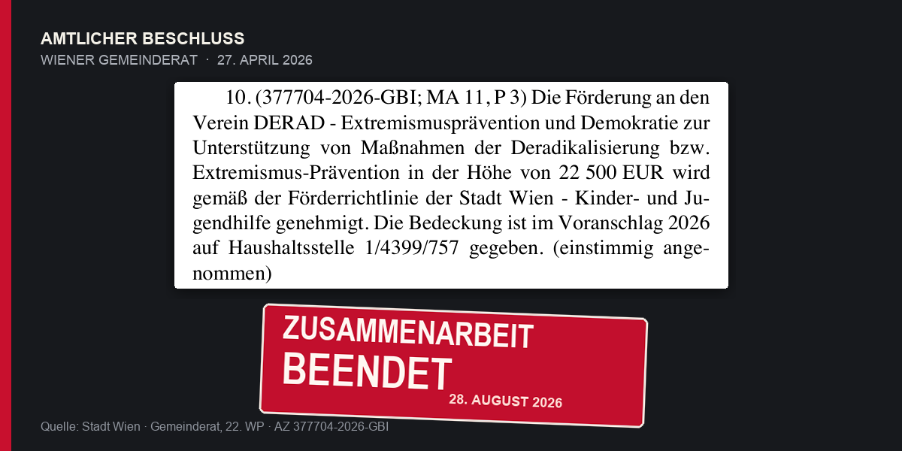

1,3 Millionen später

Seit 2019 erhielt DERAD nach Angaben des Justizministeriums mehr als 1,3 Millionen Euro. Am 27. April bewilligte Wien weitere 22.500 Euro. Vier Monate später beenden die Behörden die Zusammenarbeit.
Seit 2016 ließ das österreichische Justizministerium den Verein DERAD mit verurteilten Straftätern und Menschen nach ihrer Haftentlassung arbeiten. Der Auftrag: glaubensbasierte Deradikalisierung, Distanzierungs- und Ausstiegsarbeit.
Am 28. August war das staatliche Vertrauen beendet.
Die Direktion Staatsschutz und Nachrichtendienst sieht in einem neuen Lagebild Hinweise, „die die bisher angenommene Unbedenklichkeit des Vereins infrage stellen“. Konkret nennt die DSN Anhaltspunkte für einen Einfluss der Muslimbruderschaft auf DERAD.
Das Justizministerium beendete daraufhin die Zusammenarbeit. Die DSN will außerdem den Ausschluss des Vereins aus dem Bundesweiten Netzwerk Extremismusprävention und Deradikalisierung beantragen. Dafür ist ein einstimmiger Beschluss des Netzwerks erforderlich.
Die veröffentlichte Mitteilung enthält nicht die Belege des Lagebilds. Sie nennt Anhaltspunkte, keinen gerichtlich festgestellten Sachverhalt.
Die öffentlichen Geldflüsse sind konkreter. Nach Angaben des Justizministeriums, die der ORF wiedergibt, erhielt DERAD seit 2019 mehr als 1,3 Millionen Euro aus dem Justizbudget. Allein 2025 waren es 270.562,04 Euro.
Auch Wien zahlte. Der Gemeinderat beschloss am 27. April 2026 einstimmig 22.500 Euro für Maßnahmen der Deradikalisierung und Extremismusprävention.
Am 28. August setzte die Wiener Kinder- und Jugendhilfe die Zusammenarbeit aus. Gleichzeitig wurde die Mitgliedschaft von DERAD-Gründer Moussa Al-Hassan Diaw im Wiener Integrationsrat suspendiert. Die Stadt verlangt eine lückenlose Aufklärung. Auch das Bildungsministerium stoppte seine Kooperation.
Diaw weist die Vorwürfe zurück. DERAD habe selbst vor der Muslimbruderschaft gewarnt und Sicherheitsbehörden dazu geschult. Strafrechtliche Vorwürfe bestehen laut APA nicht.
Die entscheidende Frage richtet sich deshalb nicht nur an den Verein. Wie konnte DERAD fast zehn Jahre Zugang zu einem besonders sensiblen Bereich erhalten, mehr als 1,3 Millionen Euro aus dem Justizbudget beziehen und im April noch einstimmig gefördert werden, bevor die Behörden seine Unbedenklichkeit infrage stellten?
Deradikalisierung verlangt Vertrauen. Kontrolle offenbar auch.